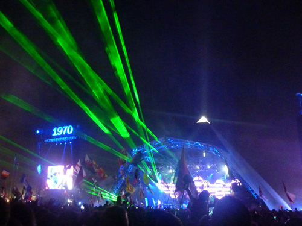
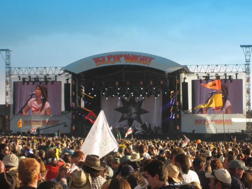
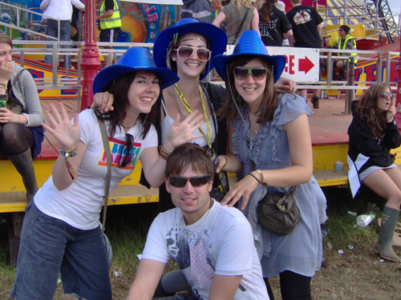
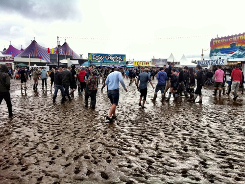
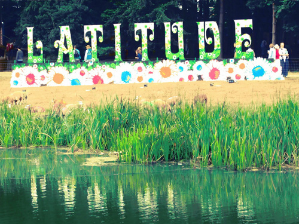
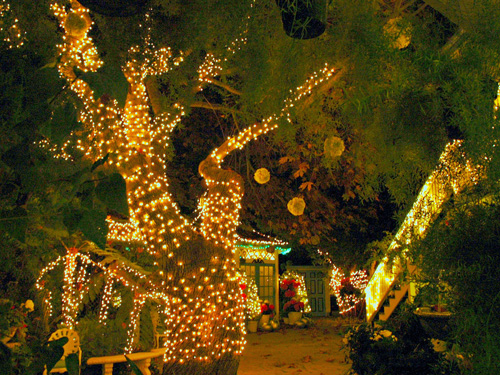
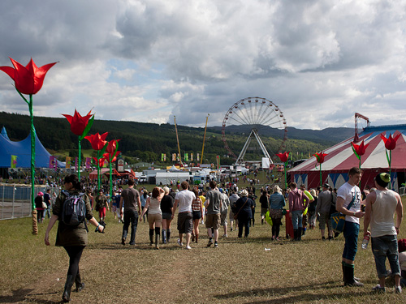
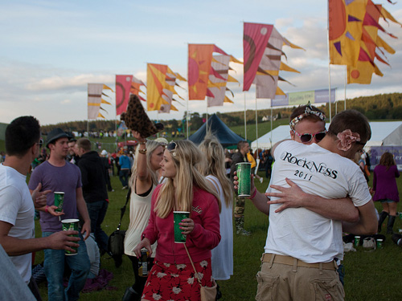
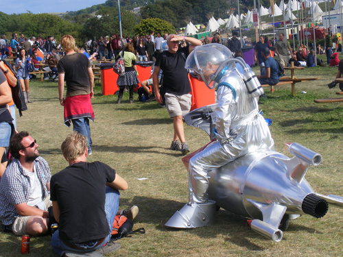
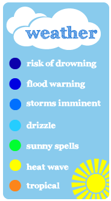

<!DOCTYPE html>
<html>
<head>
<meta name="viewport" content="initial-scale=1.0, user-scalable=no" />
<title>UK Festivals</title>

<!--Set up the CSS styles-->
<style type="text/css">
      html { 
	      height: 100%;
	  }
      
	  body {
		  height: 100%; 
		  margin: 0; 
		  padding: 0;
		  background-image: url('background9.jpg');
		  background-color: #B3CDE6;
		  background-repeat: no-repeat;
		  background-attachment: fixed;
		  background-position: right bottom; 
	      background-size: cover;
	  }
      
	  /*Adapt the following styling depending on where you want to put your map. If you want a 'full screen' map, then set the width and height to 100 percent and remove the margins.*/
	  #festival-map { 
	  	  height: 100%;
		  width: 65%; 
		  margin-left: auto;
          margin-right: auto;
		  border-right-width: 2px;
		  border-right-color: #ffffff;
		  border-right-style: solid;
		  border-left-width: 2px;
		  border-left-color: #ffffff;
		  border-left-style: solid;
	  }
	   
	  .pop_up_image_box_text {
	 	  font-family: Verdana, Geneva, sans-serif;
	 	  font-size: 16px; 
		  line-height: 22px; 
	 	  color: #000000; 
	 	  display: inline; 
		  width: 550px;
		  height: 425px;
	  }

</style>


<!--Connect to the google maps api using your api key-->
<script type="text/javascript" src="https://maps.googleapis.com/maps/api/js?key=YOUR_GOOGLE_MAPS_API_KEY_HERE&sensor=true"></script>

<!--Connect to the infobox javascript library. This is used later to create the pop-up windows -->
<script src="infobox/infobox.js" type="text/javascript"></script>

<!--Connects to jQuery-->
<script src="http://ajax.googleapis.com/ajax/libs/jquery/1.3.2/jquery.min.js" type="text/javascript"></script> 

<!--Main chunk of javascript that creates and controls the map.-->
<script type="text/javascript">

//Set up the custom styles for the map. I've created two styles so the map can switch between them depending on the zoom level. i.e. there is far less detail when the map is zoomed out.
//First, we read in the data describing style.
var style_festival = [
  {
    "featureType": "administrative",
    "stylers": [
      { "visibility": "off" }
    ]
  },{
    "featureType": "poi",
    "stylers": [
      { "visibility": "off" }
    ]
  },{
    "featureType": "transit",
    "stylers": [
      { "visibility": "off" }
    ]
  },{
    "featureType": "road",
    "stylers": [
      { "visibility": "off" }
    ]
  },{
    "featureType": "landscape",
    "stylers": [
      { "color": "#FFE200" }
    ]
  },{
    "featureType": "water",
    "stylers": [
      { "visibility": "on" },
      { "color": "#4f92c6" }
    ]
  }
];

var style_festival_zoomed = [
  {
    "featureType": "administrative",
    "stylers": [
      { "visibility": "on" }
    ]
  },{
    "featureType": "poi",
    "stylers": [
      { "visibility": "on" }
    ]
  },{
    "featureType": "transit",
    "stylers": [
      { "visibility": "on" }
    ]
  },{
    "featureType": "road",
    "stylers": [
      { "visibility": "on" }
    ]
  },{
    "featureType": "landscape",
    "stylers": [
      { "color": "#FFE200" }
    ]
  },{
    "featureType": "water",
    "stylers": [
      { "visibility": "on" },
      { "color": "#4f92c6" }
    ]
  },   {
    "featureType": "poi.park",
	"elementType": "geometry",
    "stylers": [
      { "color": "#FFFF00" }
    ]
  }
];

//Then we use this data to create the styles. 
var styled_festival = new google.maps.StyledMapType(style_festival, {name: "Festival style"});
var styled_festival_zoomed = new google.maps.StyledMapType(style_festival_zoomed, {name: "Festival style zoomed"});

//Create the variables that will be used within the map configuration options.
//The latitude and longitude of the center of the map.
var festivalMapCenter = new google.maps.LatLng(54.722439, -0.252686);
//The degree to which the map is zoomed in. This can range from 0 (least zoomed) to 21 and above (most zoomed).
var festivalMapZoom = 6;
var festivalMapZoomMax = 10;
var festivalMapZoomMin = 6;

//These options configure the setup of the map. 
var festivalMapOptions = { 
		  center: festivalMapCenter, 
          zoom: festivalMapZoom,
		  maxZoom:festivalMapZoomMax,
		  minZoom:festivalMapZoomMin,
		  panControl: false,
		  mapTypeControl: false,
		   mapTypeControlOptions: {
     		mapTypeIds: [ 'map_styles_festival', 'map_styles_festival_zoomed']
   		 }
};

//Create the variable for the main map itself.
var festivalMap;

//Create control panel (ie. site title and 2 buttons) which appears on the right-hand side.
var controlPanelDiv = document.createElement('div');
var festivalMapControlPanel = new createControlPanel(controlPanelDiv, festivalMap);

//Create the reset map button.
var resetButtonDiv = document.createElement('div');
var festivalMapResetButton = new createResetButton(resetButtonDiv, festivalMap);

//Create the weather key.
var weatherKeyDiv = document.createElement('div');
var festivalMapWeatherKey = new createWeatherKey(weatherKeyDiv, festivalMap);

//Variable containing the style for the pop-up infobox.
var pop_up_info = "border: 0px solid black; background-color: #ffffff; padding:15px; margin-top: 8px; border-radius:10px; -moz-border-radius: 10px; -webkit-border-radius: 10px; box-shadow: 1px 1px #888;";


//When the page loads, the line below calls the function below called 'loadFestivalMap' to load up the map.
google.maps.event.addDomListener(window, 'load', loadFestivalMap);


//setting up the rainfall map overlay
var rainMapOverlay = new google.maps.ImageMapType({
      getTileUrl: function(coord, zoom) {
		return 'tiles/rainfall' + '/' +zoom+ '/' +coord.x+ '/' + coord.y +'.png';
       },
       tileSize: new google.maps.Size(256, 256)
});

//Variable to hold information about whether the rainfall map is currently showing. Initially it's 0 as it's not visiable as map loads up. It's altered as the umbrella icon is clicked, using the 'handelRequests' function below.
var rainfallOverlayToggle = 0;
var smallEventsToggle = 0 ;

var markerLat = 0;
var markerLong = 0;


var marker = [];
var infowindow = [];


  


//THE MAIN FUNCTION THAT IS CALLED WHEN THE WEB PAGE LOADS--------------------------------------------------------------------------------
function loadFestivalMap() {
	
//The variable to hold the map was created above.The line below creates the map, assigning it to this variable. The line below also loads the map into the div with the id 'festival-map' (see code within the 'body' tags below), and applies the 'festivalMapOptions' (above) to configure this map. 
festivalMap = new google.maps.Map(document.getElementById("festival-map"), festivalMapOptions);	

//Assigning the two map styles defined above to the map.
festivalMap.mapTypes.set('map_styles_festival', styled_festival);
festivalMap.mapTypes.set('map_styles_festival_zoomed', styled_festival_zoomed);
//Setting the one of the styles to display as default as the map loads.
festivalMap.setMapTypeId('map_styles_festival');


//Continuously listens out for when the zoom level changes. This includs when the map zooms when a marker is clicked.
google.maps.event.addListener(festivalMap, "zoom_changed", function() {
	var newZoom = festivalMap.getZoom();
	//If the map is zoomed in, the switch to the style that shows the higher level of detail.
	if (newZoom > 6){
		festivalMap.setMapTypeId('map_styles_festival_zoomed');
			}
	//Otherwise the map must be zoomed out, so use the style with the lower level of detail.
	else {
		festivalMap.setMapTypeId('map_styles_festival');
	}

});


//Add the control panel and reset button (created previously) to the map.
festivalMap.controls[google.maps.ControlPosition.RIGHT_TOP].push(controlPanelDiv);
festivalMap.controls[google.maps.ControlPosition.RIGHT_BOTTOM].push(resetButtonDiv);

//Calls the function below to load up all the map markers.
loadMapMarkers();

}


//Function that loads the map markers and the pop-up info boxes.
function loadMapMarkers (){

//GLASTONBURY -----------------

//Setting the position of the Glastonbury map marker.
var markerPositionGlastonbury = new google.maps.LatLng(51.159803, -2.585585);

//Setting the icon to be used with the Glastonbury map marker.
var markerIconGlastonbury = {
  url: 'icons/icon_glas_uk.png',
  //The size image file.
  size: new google.maps.Size(225, 120),
  //The point on the image to measure the anchor from. 0, 0 is the top left.
  origin: new google.maps.Point(0, 0),
  //The x y coordinates of the anchor point on the marker. e.g. If your map marker was a drawing pin then the anchor would be the tip of the pin.
  anchor: new google.maps.Point(189, 116)
};

//Setting the shape to be used with the Glastonbury map marker.
var markerShapeGlastonbury = {
      coord: [12,4,216,22,212,74,157,70,184,111,125,67,6,56],
      type: 'poly'
};

//Creating the Glastonbury map marker.
markerGlastonbury = new google.maps.Marker({
      //uses the position set above.
	  position: markerPositionGlastonbury,
	  //adds the marker to the map.
      map: festivalMap,
      title: 'Glastonbury Festival',
	  //assigns the icon image set above to the marker.
	  icon: markerIconGlastonbury,
	  //assigns the icon shape set above to the marker.
	  shape: markerShapeGlastonbury,
	  //sets the z-index of the map marker.
	  zIndex:107
});

//Creates the information to go in the pop-up info box.
var boxTextGlastonbury = document.createElement("div");
boxTextGlastonbury.style.cssText = pop_up_info;
boxTextGlastonbury.innerHTML = '<span class="pop_up_box_text"></span>';

//Sets up the configuration options of the pop-up info box.                
var infoboxOptionsGlastonbury = {
                 content: boxTextGlastonbury
                ,disableAutoPan: false
                ,maxWidth: 0
                ,pixelOffset: new google.maps.Size(-241, 0)
                ,zIndex: null
                ,boxStyle: { 
                  background: "url('infobox/pop_up_box_top_arrow.png') no-repeat"
                  ,opacity: 1
                  ,width: "530px"
                 }
                ,closeBoxMargin: "10px 2px 2px 2px"
                ,closeBoxURL: "icons/button_close.png"
                ,infoBoxClearance: new google.maps.Size(1, 1)
                ,isHidden: false
                ,pane: "floatPane"
                ,enableEventPropagation: false
};

//Creates the pop-up infobox for Glastonbury, adding the configuration options set above.
infoboxGlastonbury = new InfoBox(infoboxOptionsGlastonbury);

//Add an 'event listener' to the Glastonbury map marker to listen out for when it is clicked.
google.maps.event.addListener(markerGlastonbury, "click", function (e) {
			//Open the Glastonbury info box.
			infoboxGlastonbury.open(festivalMap, this);
			//Changes the z-index property of the marker to make the marker appear on top of other markers.
			this.setZIndex(google.maps.Marker.MAX_ZINDEX + 1);
			//Zooms the map.
			setZoomWhenMarkerClicked();
			//Sets the Glastonbury marker to be the center of the map. 
			festivalMap.setCenter(markerGlastonbury.getPosition());
});


//ISLE OF WIGHT-----------

var markerPositionIsleOfWight = new google.maps.LatLng(50.708571, -1.285615);

var markerIconIsleOfWight = {
  url: 'icons/icon_iow.png',
  size: new google.maps.Size(198, 108),
  origin: new google.maps.Point(0, 0),
  anchor: new google.maps.Point(103, 102)
};

var markerShapeIsleOfWight = {
      coord: [6,30,180,4,192,70,103,82,105,105,82,85,15,93],
      type: 'poly'
};

markerIsleOfWight = new google.maps.Marker({
	  position: markerPositionIsleOfWight,
      map: festivalMap,
      title: 'Isle of Wight Festival',
	  icon: markerIconIsleOfWight,
	  shape: markerShapeIsleOfWight,
	  zIndex:108
});

//Creates the information to go in the pop-up info box.
var boxTextIsleOfWight = document.createElement("div");
boxTextIsleOfWight.style.cssText = pop_up_info;
boxTextIsleOfWight.innerHTML = '<span class="pop_up_box_text"></span>';

//Sets up the configuration options of the pop-up info box.                
var infoboxOptionsIsleOfWight = {
                 content: boxTextIsleOfWight
                ,disableAutoPan: false
                ,maxWidth: 0
                ,pixelOffset: new google.maps.Size(-241, 0)
                ,zIndex: null
                ,boxStyle: { 
                  background: "url('infobox/pop_up_box_top_arrow.png') no-repeat"
                  ,opacity: 1
                  ,width: "530px"
                 }
                ,closeBoxMargin: "10px 2px 2px 2px"
                ,closeBoxURL: "icons/button_close.png"
                ,infoBoxClearance: new google.maps.Size(1, 1)
                ,isHidden: false
                ,pane: "floatPane"
                ,enableEventPropagation: false
};

//Creates the pop-up infobox for IsleOfWight, adding the configuration options set above.
infoboxIsleOfWight = new InfoBox(infoboxOptionsIsleOfWight);

//Add an 'event listener' to the Glastonbury map marker to listen out for when it is clicked.
google.maps.event.addListener(markerIsleOfWight, "click", function (e) {
			//Open the Glastonbury info box.
			infoboxIsleOfWight.open(festivalMap, this);
			//Changes the z-index property of the marker to make the marker appear on top of other markers.
			this.setZIndex(google.maps.Marker.MAX_ZINDEX + 1);
			//Zooms the map.
			setZoomWhenMarkerClicked();
			//Sets the IsleOfWight marker to be the center of the map. 
			festivalMap.setCenter(markerIsleOfWight.getPosition());
});

//LEEDS ------------

var markerPositionLeeds = new google.maps.LatLng(53.868083, -1.381359);

var markerIconLeeds = {
  url: 'icons/icon_leeds.png',
  size: new google.maps.Size(216, 151),
  origin: new google.maps.Point(0, 0),
  anchor: new google.maps.Point(192, 148)
};

var markerShapeLeeds = {
      coord: [18,8,208,28,200,113,162,110,190,145,128,109,6,93],
      type: 'poly'
};

markerLeeds = new google.maps.Marker({
	  position: markerPositionLeeds,
      map: festivalMap,
      title: 'Leeds Festival',
	  icon: markerIconLeeds,
	  shape: markerShapeLeeds,
	  zIndex:103
});

//Creates the information to go in the pop-up info box.
var boxTextLeeds = document.createElement("div");
boxTextLeeds.style.cssText = pop_up_info;
boxTextLeeds.innerHTML = '<span class="pop_up_box_text"></span>';

//Sets up the configuration options of the pop-up info box.                
var infoboxOptionsLeeds = {
                 content: boxTextLeeds
                ,disableAutoPan: false
                ,maxWidth: 0
                ,pixelOffset: new google.maps.Size(-241, 0)
                ,zIndex: null
                ,boxStyle: { 
                  background: "url('infobox/pop_up_box_top_arrow.png') no-repeat"
                  ,opacity: 1
                  ,width: "530px"
                 }
                ,closeBoxMargin: "10px 2px 2px 2px"
                ,closeBoxURL: "icons/button_close.png"
                ,infoBoxClearance: new google.maps.Size(1, 1)
                ,isHidden: false
                ,pane: "floatPane"
                ,enableEventPropagation: false
};

//Creates the pop-up infobox for Leeds, adding the configuration options set above.
infoboxLeeds = new InfoBox(infoboxOptionsLeeds);

//Add an 'event listener' to the Glastonbury map marker to listen out for when it is clicked.
google.maps.event.addListener(markerLeeds, "click", function (e) {
			//Open the Glastonbury info box.
			infoboxLeeds.open(festivalMap, this);
			//Changes the z-index property of the marker to make the marker appear on top of other markers.
			this.setZIndex(google.maps.Marker.MAX_ZINDEX + 1);
			//Zooms the map.
			setZoomWhenMarkerClicked();
			//Sets the Leeds marker to be the center of the map. 
			festivalMap.setCenter(markerLeeds.getPosition());
});

//READING -------------
var markerPositionReading = new google.maps.LatLng(51.465602, -0.987096);

var markerIconReading = {
  url: 'icons/icon_reading.png',
  size: new google.maps.Size(196, 114),
  origin: new google.maps.Point(0, 0),
  anchor: new google.maps.Point(46, 109)
};

var markerShapeReading = {
      coord: [8,54,177,7,189,49,65,88,44,110,47,91,20,98],
      type: 'poly'
};

markerReading = new google.maps.Marker({
	  position: markerPositionReading,
      map: festivalMap,
      title: 'Reading Festival',
	  icon: markerIconReading,
	  shape: markerShapeReading,
	  zIndex:106
});

//Creates the information to go in the pop-up info box.
var boxTextReading = document.createElement("div");
boxTextReading.style.cssText = pop_up_info;
boxTextReading.innerHTML = '<span class="pop_up_box_text"></span>';

//Sets up the configuration options of the pop-up info box.                
var infoboxOptionsReading = {
                 content: boxTextReading
                ,disableAutoPan: false
                ,maxWidth: 0
                ,pixelOffset: new google.maps.Size(-241, 0)
                ,zIndex: null
                ,boxStyle: { 
                  background: "url('infobox/pop_up_box_top_arrow.png') no-repeat"
                  ,opacity: 1
                  ,width: "530px"
                 }
                ,closeBoxMargin: "10px 2px 2px 2px"
                ,closeBoxURL: "icons/button_close.png"
                ,infoBoxClearance: new google.maps.Size(1, 1)
                ,isHidden: false
                ,pane: "floatPane"
                ,enableEventPropagation: false
};

//Creates the pop-up infobox for Reading, adding the configuration options set above.
infoboxReading = new InfoBox(infoboxOptionsReading);

//Add an 'event listener' to the Glastonbury map marker to listen out for when it is clicked.
google.maps.event.addListener(markerReading, "click", function (e) {
			//Open the Glastonbury info box.
			infoboxReading.open(festivalMap, this);
			//Changes the z-index property of the marker to make the marker appear on top of other markers.
			this.setZIndex(google.maps.Marker.MAX_ZINDEX + 1);
			//Zooms the map.
			setZoomWhenMarkerClicked();
			//Sets the Reading marker to be the center of the map. 
			festivalMap.setCenter(markerReading.getPosition());
});

//LATITUDE -------------
var markerPositionLatitude = new google.maps.LatLng(52.337013, 1.595228);

var markerIconLatitude = {
  url: 'icons/icon_lat.png',
  size: new google.maps.Size(192, 128),
  origin: new google.maps.Point(0, 0),
  anchor: new google.maps.Point(82, 125)
};

var markerShapeLatitude = {
      coord: [8,8,184,10,182,70,111,70,82,122,87,71,9,71],
      type: 'poly'
};

markerLatitude = new google.maps.Marker({
	  position: markerPositionLatitude,
      map: festivalMap,
      title: 'Latitude Festival',
	  icon: markerIconLatitude,
	  shape: markerShapeLatitude,
	  zIndex:105
});

//Creates the information to go in the pop-up info box.
var boxTextLatitude = document.createElement("div");
boxTextLatitude.style.cssText = pop_up_info;
boxTextLatitude.innerHTML = '<span class="pop_up_box_text"></span>';

//Sets up the configuration options of the pop-up info box.                
var infoboxOptionsLatitude = {
                 content: boxTextLatitude
                ,disableAutoPan: false
                ,maxWidth: 0
                ,pixelOffset: new google.maps.Size(-241, 0)
                ,zIndex: null
                ,boxStyle: { 
                  background: "url('infobox/pop_up_box_top_arrow.png') no-repeat"
                  ,opacity: 1
                  ,width: "530px"
                 }
                ,closeBoxMargin: "10px 2px 2px 2px"
                ,closeBoxURL: "icons/button_close.png"
                ,infoBoxClearance: new google.maps.Size(1, 1)
                ,isHidden: false
                ,pane: "floatPane"
                ,enableEventPropagation: false
};

//Creates the pop-up infobox for Latitude, adding the configuration options set above.
infoboxLatitude = new InfoBox(infoboxOptionsLatitude);

//Add an 'event listener' to the Glastonbury map marker to listen out for when it is clicked.
google.maps.event.addListener(markerLatitude, "click", function (e) {
			//Open the Glastonbury info box.
			infoboxLatitude.open(festivalMap, this);
			//Changes the z-index property of the marker to make the marker appear on top of other markers.
			this.setZIndex(google.maps.Marker.MAX_ZINDEX + 1);
			//Zooms the map.
			setZoomWhenMarkerClicked();
			//Sets the Latitude marker to be the center of the map. 
			festivalMap.setCenter(markerLatitude.getPosition());
});

//SECRET GARDEN ------------
var markerPositionGarden = new google.maps.LatLng(52.383126, -0.181189);

var markerIconGarden = {
  url: 'icons/icon_green2.png',
  size: new google.maps.Size(139, 138),
  origin: new google.maps.Point(0, 0),
  anchor: new google.maps.Point(117, 134)
};

var markerShapeGarden = {
      coord: [7,16,128,5,133,110,107,113,117,133,82,116,15,120],
      type: 'poly'
};

markerGarden = new google.maps.Marker({
	  position: markerPositionGarden,
      map: festivalMap,
      title: 'Seceret Garden Festival',
	  icon: markerIconGarden,
	  shape: markerShapeGarden,
	  zIndex:104
});

//Creates the information to go in the pop-up info box.
var boxTextGarden = document.createElement("div");
boxTextGarden.style.cssText = pop_up_info;
boxTextGarden.innerHTML = '<span class="pop_up_box_text"></span>';

//Sets up the configuration options of the pop-up info box.                
var infoboxOptionsGarden = {
                 content: boxTextGarden
                ,disableAutoPan: false
                ,maxWidth: 0
                ,pixelOffset: new google.maps.Size(-241, 0)
                ,zIndex: null
                ,boxStyle: { 
                  background: "url('infobox/pop_up_box_top_arrow.png') no-repeat"
                  ,opacity: 1
                  ,width: "530px"
                 }
                ,closeBoxMargin: "10px 2px 2px 2px"
                ,closeBoxURL: "icons/button_close.png"
                ,infoBoxClearance: new google.maps.Size(1, 1)
                ,isHidden: false
                ,pane: "floatPane"
                ,enableEventPropagation: false
};

//Creates the pop-up infobox for Garden, adding the configuration options set above.
infoboxGarden = new InfoBox(infoboxOptionsGarden);

//Add an 'event listener' to the Glastonbury map marker to listen out for when it is clicked.
google.maps.event.addListener(markerGarden, "click", function (e) {
			//Open the Glastonbury info box.
			infoboxGarden.open(festivalMap, this);
			//Changes the z-index property of the marker to make the marker appear on top of other markers.
			this.setZIndex(google.maps.Marker.MAX_ZINDEX + 1);
			//Zooms the map.
			setZoomWhenMarkerClicked();
			//Sets the Garden marker to be the center of the map. 
			festivalMap.setCenter(markerGarden.getPosition());
});

//T IN THE PARK ------------
var markerPositionTPark = new google.maps.LatLng(56.208772, -3.474255);

var markerIconTPark = {
  url: 'icons/icon_tpark.png',
  size: new google.maps.Size(173, 110),
  origin: new google.maps.Point(0, 0),
  anchor: new google.maps.Point(31, 108)
};

var markerShapeTPark = {
      coord: [17,6,168,27,157,105,53,91,32,105,26,86,7,83],
      type: 'poly'
};

markerTPark = new google.maps.Marker({
	  position: markerPositionTPark,
      map: festivalMap,
      title: 'T-Park Festival',
	  icon: markerIconTPark,
	  shape: markerShapeTPark,
	  zIndex:101
});

//Creates the information to go in the pop-up info box.
var boxTextTPark = document.createElement("div");
boxTextTPark.style.cssText = pop_up_info;
boxTextTPark.innerHTML = '<span class="pop_up_box_text"></span>';

//Sets up the configuration options of the pop-up info box.                
var infoboxOptionsTPark = {
                 content: boxTextTPark
                ,disableAutoPan: false
                ,maxWidth: 0
                ,pixelOffset: new google.maps.Size(-241, 0)
                ,zIndex: null
                ,boxStyle: { 
                  background: "url('infobox/pop_up_box_top_arrow.png') no-repeat"
                  ,opacity: 1
                  ,width: "530px"
                 }
                ,closeBoxMargin: "10px 2px 2px 2px"
                ,closeBoxURL: "icons/button_close.png"
                ,infoBoxClearance: new google.maps.Size(1, 1)
                ,isHidden: false
                ,pane: "floatPane"
                ,enableEventPropagation: false
};

//Creates the pop-up infobox for TPark, adding the configuration options set above.
infoboxTPark = new InfoBox(infoboxOptionsTPark);

//Add an 'event listener' to the Glastonbury map marker to listen out for when it is clicked.
google.maps.event.addListener(markerTPark, "click", function (e) {
			//Open the Glastonbury info box.
			infoboxTPark.open(festivalMap, this);
			//Changes the z-index property of the marker to make the marker appear on top of other markers.
			this.setZIndex(google.maps.Marker.MAX_ZINDEX + 1);
			//Zooms the map.
			setZoomWhenMarkerClicked();
			//Sets the TPark marker to be the center of the map. 
			festivalMap.setCenter(markerTPark.getPosition());
});

//ROCKNESS -------------
var markerPositionRockness = new google.maps.LatLng(57.383732, -4.331617);

var markerIconRockness = {
  url: 'icons/icon_rockness.png',
  size: new google.maps.Size(214, 82),
  origin: new google.maps.Point(0, 0),
  anchor: new google.maps.Point(182, 77)
};

var markerShapeRockness = {
      coord: [10,7,205,7,205,57,183,57,183,76,164,58,8,58],
      type: 'poly'
};

markerRockness = new google.maps.Marker({
	  position: markerPositionRockness,
      map: festivalMap,
      title: 'Rockness Festival',
	  icon: markerIconRockness,
	  shape: markerShapeRockness,
	  zIndex:100
});

//Creates the information to go in the pop-up info box.
var boxTextRockness = document.createElement("div");
boxTextRockness.style.cssText = pop_up_info;
boxTextRockness.innerHTML = '<span class="pop_up_box_text"></span>';

//Sets up the configuration options of the pop-up info box.                
var infoboxOptionsRockness = {
                 content: boxTextRockness
                ,disableAutoPan: false
                ,maxWidth: 0
                ,pixelOffset: new google.maps.Size(-241, 0)
                ,zIndex: null
                ,boxStyle: { 
                  background: "url('infobox/pop_up_box_top_arrow.png') no-repeat"
                  ,opacity: 1
                  ,width: "530px"
                 }
                ,closeBoxMargin: "10px 2px 2px 2px"
                ,closeBoxURL: "icons/button_close.png"
                ,infoBoxClearance: new google.maps.Size(1, 1)
                ,isHidden: false
                ,pane: "floatPane"
                ,enableEventPropagation: false
};

//Creates the pop-up infobox for Rockness, adding the configuration options set above.
infoboxRockness = new InfoBox(infoboxOptionsRockness);

//Add an 'event listener' to the Glastonbury map marker to listen out for when it is clicked.
google.maps.event.addListener(markerRockness, "click", function (e) {
			//Open the Glastonbury info box.
			infoboxRockness.open(festivalMap, this);
			//Changes the z-index property of the marker to make the marker appear on top of other markers.
			this.setZIndex(google.maps.Marker.MAX_ZINDEX + 1);
			//Zooms the map.
			setZoomWhenMarkerClicked();
			//Sets the Rockness marker to be the center of the map. 
			festivalMap.setCenter(markerRockness.getPosition());
});

//GLASGOBURY -----------
var markerPositionGlasgowbury = new google.maps.LatLng(54.822809, -6.842251);

var markerIconGlasgowbury = {
  url: 'icons/icon_glas_ni.png',
  size: new google.maps.Size(222, 102),
  origin: new google.maps.Point(0, 0),
  anchor: new google.maps.Point(152, 102)
};

var markerShapeGlasgowbury = {
      coord: [7,47,206,6,210,55,140,68,147,98,120,75,17,94],
      type: 'poly'
};

markerGlasgowbury = new google.maps.Marker({
	  position: markerPositionGlasgowbury,
      map: festivalMap,
      title: 'Glasgowbury Festival',
	  icon: markerIconGlasgowbury,
	  shape: markerShapeGlasgowbury,
	  zIndex:102
});

//Creates the information to go in the pop-up info box.
var boxTextGlasgowbury = document.createElement("div");
boxTextGlasgowbury.style.cssText = pop_up_info;
boxTextGlasgowbury.innerHTML = '<span class="pop_up_box_text"></span>';

//Sets up the configuration options of the pop-up info box.                
var infoboxOptionsGlasgowbury = {
                 content: boxTextGlasgowbury
                ,disableAutoPan: false
                ,maxWidth: 0
                ,pixelOffset: new google.maps.Size(-241, 0)
                ,zIndex: null
                ,boxStyle: { 
                  background: "url('infobox/pop_up_box_top_arrow.png') no-repeat"
                  ,opacity: 1
                  ,width: "530px"
                 }
                ,closeBoxMargin: "10px 2px 2px 2px"
                ,closeBoxURL: "icons/button_close.png"
                ,infoBoxClearance: new google.maps.Size(1, 1)
                ,isHidden: false
                ,pane: "floatPane"
                ,enableEventPropagation: false
};

//Creates the pop-up infobox for Glasgowbury, adding the configuration options set above.
infoboxGlasgowbury = new InfoBox(infoboxOptionsGlasgowbury);

//Add an 'event listener' to the Glastonbury map marker to listen out for when it is clicked.
google.maps.event.addListener(markerGlasgowbury, "click", function (e) {
			//Open the Glastonbury info box.
			infoboxGlasgowbury.open(festivalMap, this);
			//Changes the z-index property of the marker to make the marker appear on top of other markers.
			this.setZIndex(google.maps.Marker.MAX_ZINDEX + 1);
			//Zooms the map.
			setZoomWhenMarkerClicked();
			//Sets the Glasgowbury marker to be the center of the map. 
			festivalMap.setCenter(markerGlasgowbury.getPosition());
});

}


//Function that zooms the map in (if has not been zoomed already) when a map marker is clicked.
function setZoomWhenMarkerClicked(){
var currentZoom = festivalMap.getZoom();
	if (currentZoom < 7){
			festivalMap.setZoom(7);
	}
}

//Function that resets the z-indexes back to their orignal values.
function resetZindexes (){
	markerRockness.setZIndex(100);
	markerTPark.setZIndex(101);
	markerGlasgowbury.setZIndex(102);
	markerLeeds.setZIndex(103);	
	markerGarden.setZIndex(104);
	markerLatitude.setZIndex(105);
	markerReading.setZIndex(106);
	markerGlastonbury.setZIndex(107);
	markerIsleOfWight.setZIndex(108);
}

//Function that creates the control panel area, ie. the map title and the 2 buttons just beneath it.
function createControlPanel (controlPanelDiv){
   controlPanelDiv.style.padding = '0px';  
   controlUI = document.createElement('div');
   controlUI.style.border='0px solid white';
   controlUI.style.margin='10px';
   controlUI.style.paddingTop='11px';
   controlUI.style.paddingBottom='5px';
   controlUI.style.paddingLeft='0px';
   controlUI.style.paddingRight='0px';
   controlUI.style.width='245px';
   controlUI.style.height='419px';
   controlPanelDiv.appendChild(controlUI);
  
   //Map title
   titleBar = document.createElement('div');
   titleBar.style.backgroundColor = '#89CBED';
   titleBar.style.height='255px';
   titleBar.style.width='245px';
   titleBar.style.marginTop='0px';
   titleBar.style.marginBottom='0px';
   titleBar.style.marginLeft='0px';
   titleBar.style.marginRight='0px';
   titleBar.style.paddingTop='6px';
   titleBar.style.paddingBottom='2px';
   titleBar.style.paddingLeft='0px';
   titleBar.style.paddingRight='0px';
   titleBar.style.borderTopLeftRadius='5px';
   titleBar.style.borderTopRightRadius='5px';
   titleBar.style.borderBottomLeftRadius='0px';
   titleBar.style.borderBottomLeftRadius='0px';
   titleBar.style.cssFloat='left';
   titleBar.innerHTML = '<div align="center"></div>';
   controlUI.appendChild(titleBar);
   
   yellowStripe = document.createElement('div');
   yellowStripe.style.backgroundColor = '#FFFF00';
   yellowStripe.style.height='2px';
   yellowStripe.style.width='245px';
   yellowStripe.style.marginTop='3px';
   yellowStripe.style.marginBottom='3px';
   yellowStripe.style.marginLeft='0px';
   yellowStripe.style.marginRight='0px';
   yellowStripe.style.paddingTop='0px';
   yellowStripe.style.paddingBottom='0px';
   yellowStripe.style.paddingLeft='0px';
   yellowStripe.style.paddingRight='0px';
   yellowStripe.style.cssFloat='left';
   yellowStripe.style.fontFamily='Georgia, serif';
   yellowStripe.style.fontSize='14px';
   controlUI.appendChild(yellowStripe);
  
   //'Smaller' events button.
   smallEvents = document.createElement('div');
   smallEvents.style.height='108px';
   smallEvents.style.width='129px';
   smallEvents.style.marginTop='0px';
   smallEvents.style.marginBottom='0px';
   smallEvents.style.marginLeft='0px';
   smallEvents.style.marginRight='0px';
   smallEvents.style.paddingTop='0px';
   smallEvents.style.paddingBottom='2px';
   smallEvents.style.paddingLeft='0px';
   smallEvents.style.paddingRight='0px';
   smallEvents.style.cssFloat='left';
   smallEvents.innerHTML = '<div align="center" onClick="handelRequests(\'small_events\')" OnMouseOver="this.style.cursor=\'pointer\';" OnMouseOut="this.style.cursor=\'default\';"></div>';
   controlUI.appendChild(smallEvents);
   
   //Umbrella button
   brolly = document.createElement('div');
   brolly.style.height='149px';
   brolly.style.width='94px';
   brolly.style.marginTop='0px';
   brolly.style.marginBottom='0px';
   brolly.style.marginLeft='0px';
   brolly.style.marginRight='0px';
   brolly.style.paddingTop='0px';
   brolly.style.paddingBottom='2px';
   brolly.style.paddingLeft='0px';
   brolly.style.paddingRight='0px';
   brolly.style.cssFloat='left';
   brolly.innerHTML = '<div align="center" onClick="handelRequests(\'rainfall\')" OnMouseOver="this.style.cursor=\'pointer\';" OnMouseOut="this.style.cursor=\'default\';"></div>';
   controlUI.appendChild(brolly);
  
}


//Function that creates the 'Reset map' button.
function createResetButton (resetButtonDiv){
  resetButtonDiv.style.padding = '0px';  
  controlUI2 = document.createElement('div');
  controlUI2.style.backgroundColor = '#ffffff';
  controlUI2.style.borderRadius='5px';
  controlUI2.style.margin='10px';
  controlUI2.style.paddingTop='2px';
  controlUI2.style.paddingBottom='2px';
  controlUI2.style.paddingLeft='2px';
  controlUI2.style.paddingRight='5px';
  controlUI2.style.textAlign='center';
  controlUI2.style.width='148px';
  controlUI2.style.height='31px';
  controlUI2.innerHTML = '<div onClick="handelRequests(\'reset\')" OnMouseOver="this.style.cursor=\'pointer\';" OnMouseOut="this.style.cursor=\'default\';" ></div>';
  resetButtonDiv.appendChild(controlUI2);
}


//Function that creates the weather key.
function createWeatherKey (weatherKeyDiv){
  weatherKeyDiv.style.padding = '0px';  
  controlUI3 = document.createElement('div');
  controlUI3.style.margin='10px';
  controlUI3.style.textAlign='left';
  controlUI3.style.width='185px';
  controlUI3.style.height='335px';
  controlUI3.innerHTML = '';
  weatherKeyDiv.appendChild(controlUI3);
}

//Function that is called when either the 'smaller events', unbrella or the 'reset map' buttons are clicked.
function handelRequests (buttonPressed) {
//Resets the map to it's orignal state when the Reset Map button is clicked.	
if (buttonPressed === "reset"){
	//Resets the zoom, map position and marker z-indexes back to their orignal position. Also closes all infoboxes currently open.
	festivalMap.setZoom(festivalMapZoom);
	festivalMap.setCenter(festivalMapCenter);
	resetZindexes();
	//This is a function I've created (below) that closes any info boxes that are open.
	closeAllInfoboxes();

	//Remove the rainfall overlap if it is showing
	if (rainfallOverlayToggle === 1){
		festivalMap.overlayMapTypes.removeAt(0, rainMapOverlay);
		festivalMap.controls[google.maps.ControlPosition.TOP_LEFT].pop(weatherKeyDiv);
		rainfallOverlayToggle = 0;
	}
	if (smallEventsToggle === 1){
	//Close any small events that may be open.
	closeSmallEvents ();
	}
}
//Shows markers for smaller events across the UK.
else if (buttonPressed === "small_events"){
	if (smallEventsToggle === 0){
	//Small events aren't showing so show them.		
	loadPhotos();
	setZoomWhenMarkerClicked();
	smallEventsToggle = 1;
	}
	else {
	//Small events are showing so hide them.
	closeSmallEvents ();
	smallEventsToggle = 0;
	}
}
//Displays the rainfall map when the unbrella button is clicked, and removed it if is already showing.
else if (buttonPressed === "rainfall"){
	//If the rainfall map is NOT showing aleady then show it ...
	if (rainfallOverlayToggle === 0){
		//Overlays the rainfall map on top of the Google map
		festivalMap.overlayMapTypes.insertAt(0, rainMapOverlay);
		//Show the weather key.
		festivalMap.controls[google.maps.ControlPosition.TOP_LEFT].push(weatherKeyDiv);
		rainfallOverlayToggle = 1;
	}
	//If the rainfall map is showing already then hide it ...
	else {
		//remove the overlay map.
		festivalMap.overlayMapTypes.removeAt(0, rainMapOverlay);
		//remove the weather key
		festivalMap.controls[google.maps.ControlPosition.TOP_LEFT].pop(weatherKeyDiv);	
		rainfallOverlayToggle = 0;
	}
}
}

//Function that closes all info boxes.
function closeAllInfoboxes(){
	infoboxGlastonbury.close();
	infoboxIsleOfWight.close(); 
	infoboxLeeds.close(); 
	infoboxReading.close(); 
	infoboxLatitude.close(); 
	infoboxGarden.close(); 
	infoboxTPark.close(); 
	infoboxRockness.close(); 
	infoboxGlasgowbury.close();
}

//Function that closes everything related to the 'smaller events' if they are open
function closeSmallEvents (){
	//Hide all the map markers for the smaller events.
	for (var i = 0; i < marker.length; i++) {
    marker[i].setVisible(false);
   }
   //Close an photos for the smaller events that may be open.
   	for (var i = 0; i < marker.length; i++) {
    infowindow[i].close();
   }
}   

//Function that starts the process of loading the images using the Flickr API.
function loadPhotos(){
//Connects to the Flickr API and reads the results of the query into a JSON array. This query uses the 'flickr.photos.search' method to access all the photos in a particular person's user account. It also uses arguments to read in the latitude and longitude of each picture. It passes the resultant JSON array to the 'displayImages' function below.
$.getJSON("http://api.flickr.com/services/rest/?method=flickr.photos.search&api_key=YOUR_FLICKR_API_KEY_HERE&user_id=YOUR_FLICKR_ID_HERE&has_geo=1&extras=geo&format=json&jsoncallback=?", displayImages);
}

function displayImages(data){	
		//Sets up the options for creating the map markers.
		var markerIconSmallFestival = {
  					url: 'icons/icon_smaller_festials.png',
 					size: new google.maps.Size(48, 64),
  					origin: new google.maps.Point(0, 0),
  					anchor: new google.maps.Point(24, 63)
		};
		var markerShapeSmallFestival = {
   				    coord: [23,3,42,10,44,22,38,41,25,52,10,44,3,31,5,15,11,5],
   				    type: 'poly'
		};
	
	     //Loop through the results in the JSON array. The 'data.photos.photo' bit is what you are trying to 'get at'. i.e. this loop looks at each photo in turn.
         $.each(data.photos.photo, function(i,item){
					//Read in the lat and long of each photo and stores it in a variable.
                    markerLat = item.latitude;
					markerLong = item.longitude;
					
					//Read in the title of each photo
					photoTitle = item.title;
					
					//Get the url for the image.
					var photoURL = 'http://farm' + item.farm + '.static.flickr.com/' + item.server + '/' + item.id + '_' + item.secret + '_z.jpg';		
								
					htmlImageString = '';				
					var contentString = '<div class="pop_up_image_box_text">' + photoTitle + '<br/>' + htmlImageString + '</div>';

					//Create a new info window using the Google Maps API
					infowindow[i] = new google.maps.InfoWindow({
						 //Adds the content, which includes the html to display the image from Flickr, to the info window.
  		 				 content: contentString
					});

					//Create a new marker position using the Google Maps API
					var myLatlngMarker = new google.maps.LatLng(markerLat,markerLong);

					//Create a new marker using the Google Maps API and assign the marker to the map created below.
					marker[i] = new google.maps.Marker({
   					position: myLatlngMarker,
     				map: festivalMap,
					icon: markerIconSmallFestival,
					shape: markerShapeSmallFestival,
     				title:"Photo"
					});

					//Uses the Google Maps API to add an event listener that triggers the info window to open if the box marker is clicked.
					google.maps.event.addListener(marker[i], 'click', function() {
  					infowindow[i].open(festivalMap,marker[i]);
					//Makes marker icon come to the front when clicked.
					this.setZIndex(google.maps.Marker.MAX_ZINDEX + 1);	
					});
					
		});	
					
}

</script>

</head>
<body>  
     <!--Create the div to hold the map.-->
    <div id="festival-map"></div>   
</body>
</html>